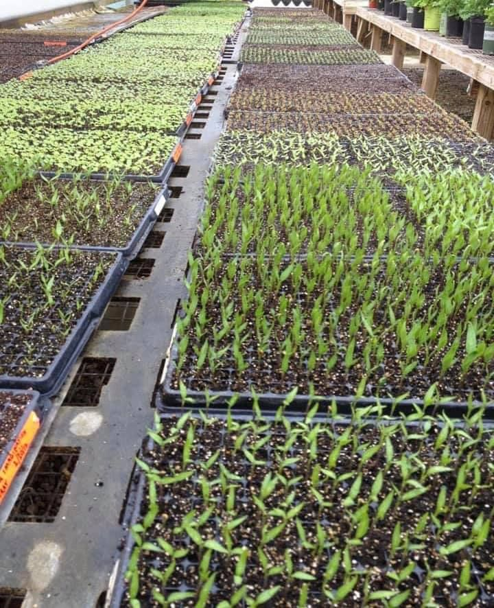

The garden journal
Long reads for gardening in central Indiana.
Detailed guides from the greenhouse on timing, planting and care, written for Montgomery County soil and weather.

Planning 8 min read
Fall Planting in Indiana: Why September and October Are Secret Planting Seasons

Flowers & perennials 8 min read
Deer-Resistant Plants for Indiana Gardens (and What Deer Will Eat Anyway)

Pollinators 8 min read
How to Plant a Pollinator Garden in Indiana for Bees, Butterflies and Hummingbirds

Containers 8 min read
Container Gardening Guide: Pots, Soil, Plants and Care for Porches and Patios

Flowers & perennials 8 min read
The Best Perennials for Central Indiana: Tough, Beautiful and Long-Lived

Flowers 8 min read
Hanging Basket Care: How to Keep Baskets Full and Blooming All Summer

Vegetables 8 min read
Growing Tomatoes in Indiana: Varieties, Planting, Staking and Disease Control

Planning 8 min read
How Much Mulch, Stone or Topsoil Do I Need? A Practical Guide with Formulas

Vegetables & fruit 8 min read
Growing Berries in Indiana: Strawberries, Blueberries, Raspberries and More

Vegetables 8 min read
How to Start a Vegetable Garden in Indiana: A Complete Beginner’s Guide

Planning 9 min read
Last Frost Dates in Central Indiana: How to Read Them and When to Plant

Houseplants 8 min read
Houseplant Care 101 (and the Best Pet-Safe Houseplants)
Planning 10 min read